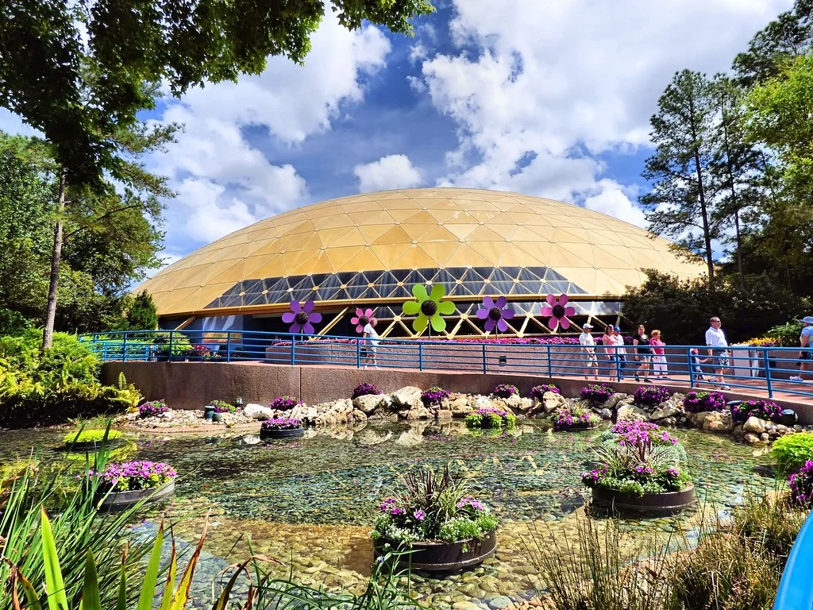
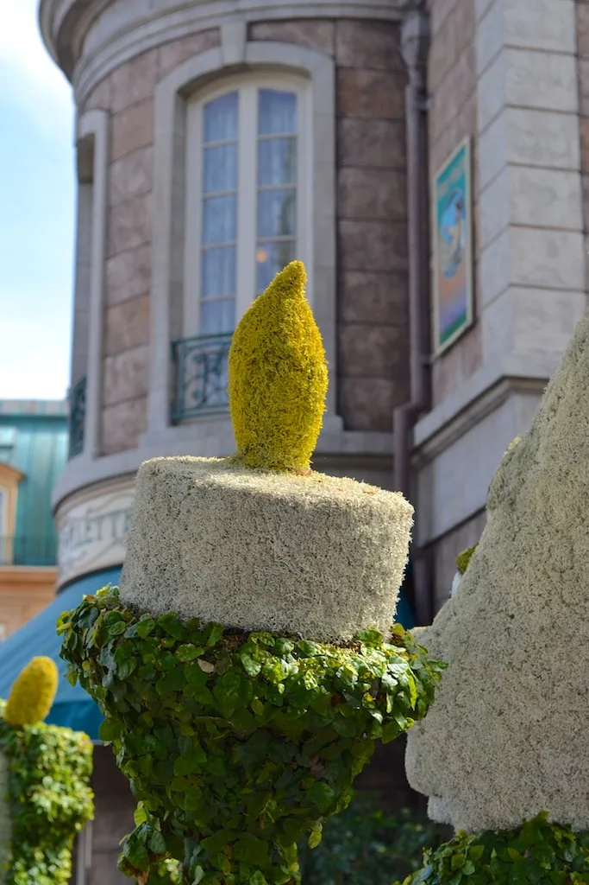

매헌시민의숲, 51개 정원으로 물들다…서울국제정원박람회 개막
서초구 매헌시민의숲 일대가 10월 1일부터 '2026 서울국제정원박람회' 가을 행사의 무대로 탈바꿈한다. 서초구는 이날부터 27일까지 약 한 달간 매헌시민의숲에서 '시민의 정원'을 주제로 한 정원박람회를 연다고 밝혔다. 이번 행사에서는 공모전을 통해 선정된 참여 정원을 비롯해 총 51개의 정원을 새롭게 만날 수 있다. 지난 5월 성동구 서울숲에서 먼저 개막했던 서울국제정원박람회가 가을 시즌을 맞아 매헌시민의숲으로 무대를 확장한 것으로, 서울 시내 두 곳에서 정원박람회가 이어지는 모양새가 됐다.
개막식은 이날 오후 5시 매헌시민의숲 숲속무대에서 열렸다. 오프닝 공연을 시작으로 환영사와 축사가 이어졌고, 정원 공모전 수상작 시상식도 함께 진행됐다. 이어 서초구 소재 청년 클래식 연주팀 'JINS'의 축하 공연이 펼쳐지며 개막 행사의 분위기를 돋웠다. 올해로 개장 40년을 맞은 매헌시민의숲이 정원박람회의 무대가 됐다는 점에서, 노후 시민공원이 새로운 콘텐츠로 재조명받는 계기가 될 것이라는 기대도 나온다.

개막 주간인 1일부터 5일까지는 다채로운 부대 프로그램도 함께 운영된다. 정원 전문가가 방문객의 정원 고민을 상담해주는 '찾아가는 정원처방', 참여 작가들과 만나는 작가 토크쇼, 그리고 야외에서 즐기는 가을정원음악회 등이 매일 번갈아 열릴 예정이다. 단순히 정원을 둘러보는 전시 관람을 넘어, 방문객이 직접 참여하고 체험할 수 있는 프로그램을 전면에 내세운 것이 이번 박람회의 특징으로 꼽힌다.
서초구는 이번 박람회를 계기로 양재 일대를 하나의 '정원길'로 연결한다는 구상도 함께 추진하고 있다. 매헌시민의숲을 중심으로 주변 녹지와 보행로를 정비해 정원박람회 기간 이후에도 시민들이 꾸준히 찾는 녹색 공간으로 가꾸겠다는 계획이다. 이를 통해 일회성 행사에 그치지 않고 지역의 정원문화 인프라를 장기적으로 확충하는 효과를 기대하고 있다고 구는 설명했다.

앞서 지난 5월 서울숲에서 열린 본 행사가 시민들의 호응을 얻은 만큼, 이번 매헌시민의숲 확대 개최에도 적잖은 관람객이 몰릴 것으로 구는 기대하고 있다. 특히 가을철 단풍 시기와 겹치는 10월 한 달간 행사가 진행되는 만큼, 정원 조경과 계절 경관이 어우러진 볼거리를 제공할 수 있을 것이라는 전망이다.
서초구 관계자들은 이번 박람회를 통해 매헌시민의숲이 단순한 녹지 공간을 넘어 서울을 대표하는 정원문화 명소로 자리매김하기를 기대하고 있다. 행사 폐막 이후에도 참여 정원 가운데 일부를 상설 전시로 남겨 지속가능한 정원 콘텐츠로 운영하는 방안도 검토되고 있는 것으로 알려졌다.
박람회 기간에는 평일과 주말을 가리지 않고 다양한 연령대의 방문객을 겨냥한 프로그램이 이어질 예정이다. 가족 단위 관람객을 위한 체험 코너와 함께, 정원 조성 과정을 소개하는 전시 패널도 곳곳에 마련돼 단순 관람을 넘어 정원 조경에 대한 이해를 높이는 기회도 함께 제공될 것으로 보인다. 서초구는 행사 기간 중 혼잡이 예상되는 주말에는 인근 대중교통 이용을 적극 안내할 계획이라고 덧붙였다.
서울시 역시 서울숲과 매헌시민의숲을 잇는 이원화된 정원박람회 운영 경험을 바탕으로, 내년부터는 더 많은 자치구가 참여하는 방식으로 행사를 확대하는 방안을 검토 중인 것으로 전해졌다. 한 해에 두 차례, 계절을 달리해 서로 다른 장소에서 정원박람회를 여는 방식이 시민들의 호응을 얻을 경우, 서울을 대표하는 정기 녹색 축제로 자리 잡을 가능성도 거론된다.